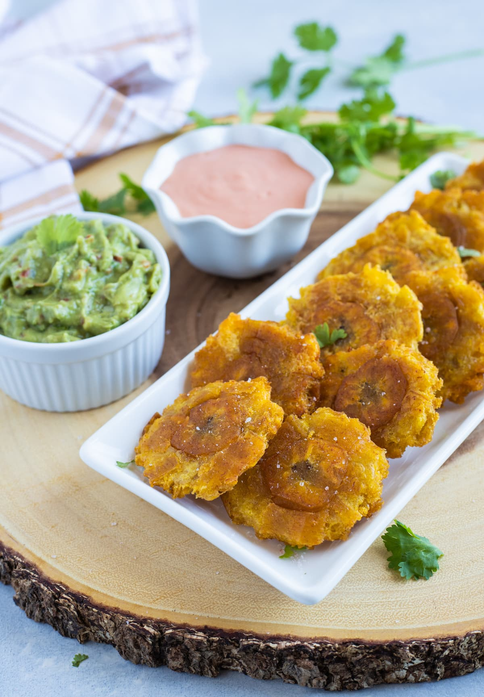

Tostones

Description
Tostones are fried green plantains. They taste great with fried meats and cheese!
Ingredients
- Green plaintains
- Oil
- Salt
Steps
- Peel the plantains
- Slice plantains into 1-inch thick round pieces
- Fry in vegetable oil for 3-4 minutes on each side
- Place onto plate lined with a paper towel to soak some of the oil
- Use a flat tool like the bottom of a cup to press on the plantains and flatten them out to about 0.5-inch-thick
- Put the flattened plantains back into the hot oil to complete frying
- Fry until golden and the edges look crispy. Around two minutes on each side.
- Place on a paper towel-lined plate to soak some of the oil
- Sprinkle salt